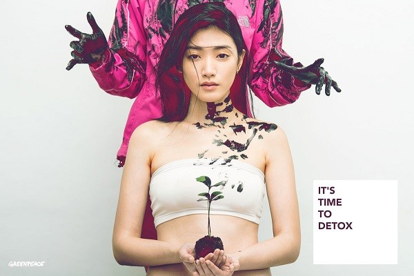
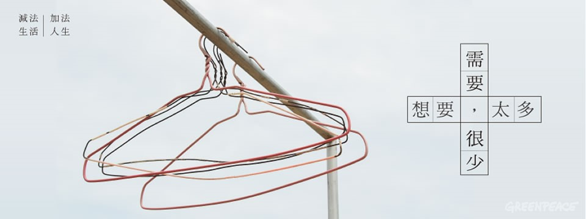

自 2011 年起，綠色和平展開「為時尚去毒」全球專案，要求紡織業界全面加入「去毒」行列，7 月 14 日，全球最大零售商之一 Tesco，也宣佈加入「無毒生產」Detox行列。再一次證明，您的支持和力量，是推動更多品牌及供應商改變的關鍵，綠色和平結合全球力量，至今已有 80 個國際品牌及供應商承諾「去毒」，佔全球紡織業界 15%。

Tesco 旗下服裝品牌 F&F 銷售點遍佈 23 個國家，共 2300 間店舖。Tesco 的承諾重點包括，將公佈供應商的完整名單，並將馬上按最嚴格的標準，逐步淘汰旗下品牌的衣服的有毒有害化學物質，如全氟化合物、溴化和氯化阻燃劑、有機錫化合物、偶氮染料等會干擾人類生殖系統甚至致癌的有毒物質；並成立相關委員會，制訂明確、積極的行動計劃和提供技術指導，力求在 2020 年或以前全面剔除所有有毒物質。
震驚是臺灣的海岸塑膠垃圾數量之多，實際看到後真的無法置信。平常我們熟悉的美麗海灘，竟然是這樣的面貌！失望是當研究調查進行時，我發現到微塑膠遍佈海洋。許多人並不了解海洋生物正面臨危機，其中部分原因，正是來自於每天每天我們的日常飲食習慣。不假思索地使用拋棄式塑膠製品、免洗餐具，用了就丟。我也曾失望於政府的禁塑政策是否來的太晚、時程太久？怎樣做，才能讓改變加速發生？
綠色和平推動紡織業去毒的六年間，紡織業的先驅對於有毒有害化學物的態度大為轉變，「Detox standard」現在已成為紡織業界的「環保指標」，紡織龍頭對汙染的態度從否認，轉為支持透明管理、淘汰有害化學物質，繼續使用有毒有害化學物質已經不再是行業選擇。
綠色和平先前發布的《時尚產業及紡織廢棄物研究》 發現全球衣服製造量從 2000 年至 2014 年增加了一倍；而相較於 15 年前，全球每人每年平均多買 60% 的衣服，但保存衣服的時間卻比 15 年前少了約一半，產生大量紡織廢料。
因此，從根源解決問題，紡織業界除了展開「無毒生產」，也必須改變其商業模式，包括重新設計產品和改變生產模式，重新定位營銷策略，扭轉地球資源瀕臨崩潰的困局。企業應減少整體產量，鼓勵消費者選擇更耐用和容易修補的衣服，如提供維修服務、加強並完善回收系統等。

作為消費者，我們的力量同樣不可忽視，從反思購物習慣，以「精挑、細選、長留」的態度選擇衣服，延長衣服的壽命，而非選擇品質差、過季即丟的速食時裝。長遠而言，我們不但節省金錢，更能守護我們的環境；如將衣服壽命從 1 年延長至兩年，便能讓溫室氣體排放量在一年內減少 24%、選購二手衣也等同省下用來生產 1 公斤的棉所需的 65kWh 電力、或是生產聚酯纖維需要的 90kWh 電力。
改變紡織業及時裝界，雖非一朝一夕之事，但你我集結全球更多力量，合力朝著正確的方向邁進，定能鼓勵更多企業及品牌承諾「無毒生產」。您也可從自身消費習慣為環境盡心，從今天起，一起實踐減法生活 、選擇與環境共存共生的消費模式。